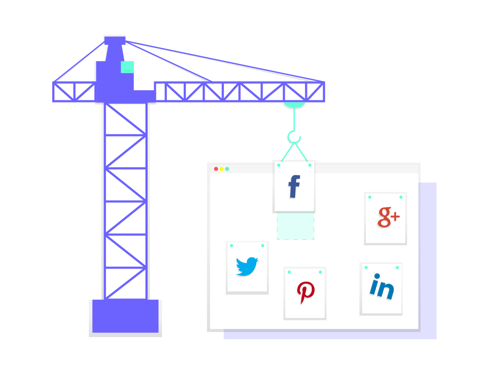

La idea de crear nuestra empresa de nombre LUKA web fue cuando mi amiga Luisa y yo (Karla) cursábamos 6to semestre de universidad en el año 2020 pues llevábamos la materia de programación web donde nos enseñaron el cómo crear una página web y la materia de ingeniería de software que nos encargó diseñar una página web , nos gustó tanto el poder desarrollarlas que decidimos empezar realizando proyectos pequeños para micro empresas así fue como nos empezamos a dar a conocer , nuestros clientes nos recomendaban ya que confiaban mucho en nosotras porque éramos responsables y entregábamos el producto como ellos lo solicitaban , como aun no éramos egresadas no cobrábamos mucho sin embargo con el dinero que íbamos ganando lo íbamos ahorrando en una cuenta de banco que abrimos , al graduarnos ya teníamos una cantidad de dinero para abrir nuestra micro empresa nos fue muy bien y pudimos extendernos así que ahora ya no solo desarrollábamos páginas web a micro empresas si no a macro empresas por lo que pudimos extendernos en tanto a territorio ya no solo era a nivel nacional si no internacional. Entonces ahora se imaginarán porque el nombre de LUKA bueno es porque son nuestras iniciales y queríamos que el nombre de nuestra empresa tuviera parte de nosotras.
Karla y Luisa, desarrolladoras web
Nuestro propósito de construir nuestra empresa fue el poder ayudar a las micro,macro y medianas empresas a tener posibilidades de dar a conocer sus servicios, más en estos tiempos que la tecnología digital esta más fuerte que nunca , esto trabajando con ellos de la mano y que se sientan cómodos al momento de estar dándonos sus requerimientos para su pagina web y así entregarles una pagina web que les garantice que sean de los primeros en salir en los buscadores y tener mas ventas.

Ofrecer diseño y desarrollo de una pagina web a nuestros clientes con la seguridad de que estaremos trabajando juntamente con él.
Ser la empresa mas reconocida en diseño y desarrollo de paginas web a nivel mundial.
>Adaptabilidad
Tenemos la habilidad de permanecer plenamente funcional mediante la adaptación a las
circunstancias cambiantes y así alcanzar los objetivos establecidos.
>Cercanía
Lo más importante para nosotros es que nuestros clientes se sientan partícipes en el desarrollo
del producto.
>Transparencia
Somos claros en la descripción de los servicios y no escondemos información que puede ser
relevante para los clientes.
>Honestidad
Somos sinceros y coherentes en nuestros servicios.